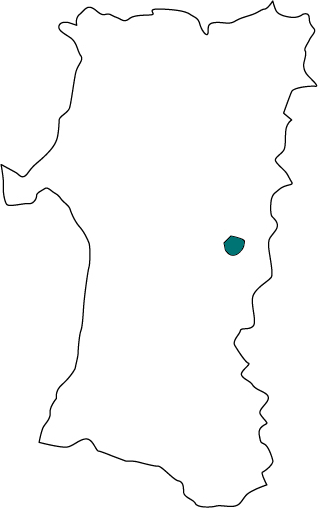
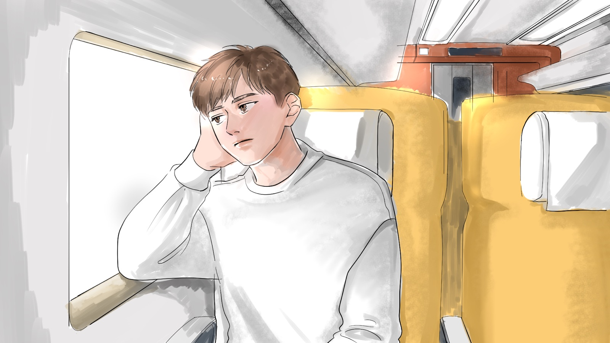
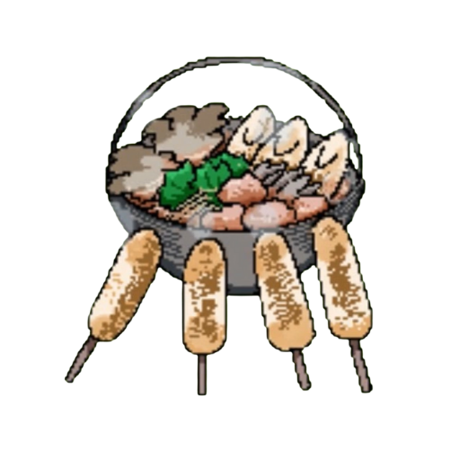
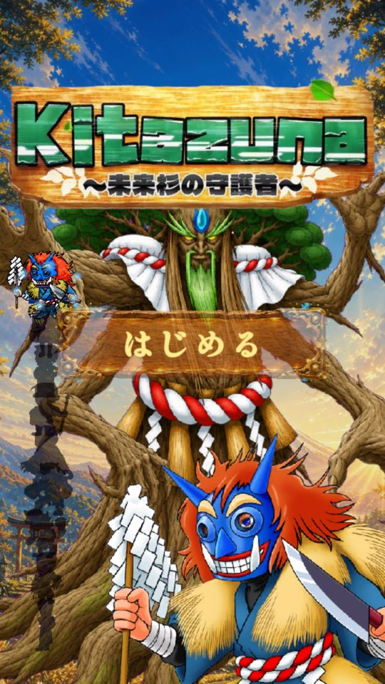
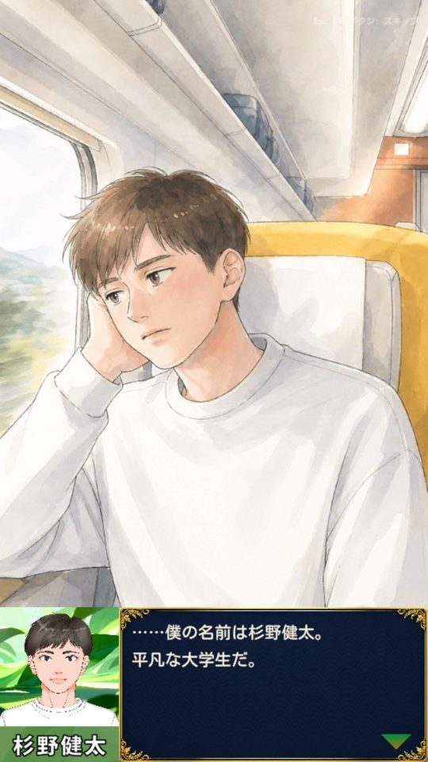
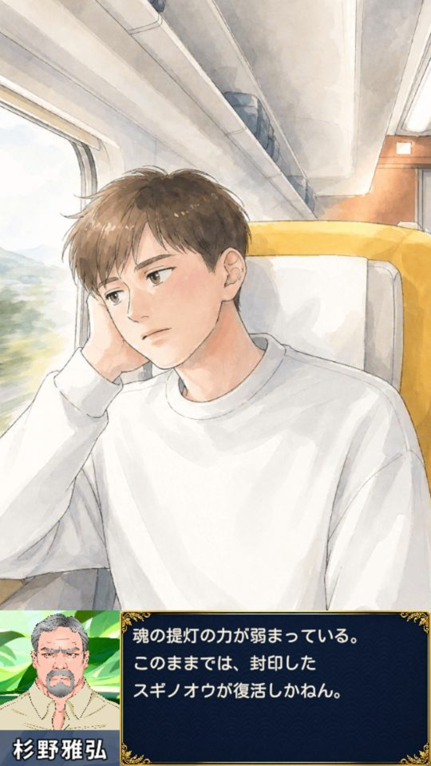
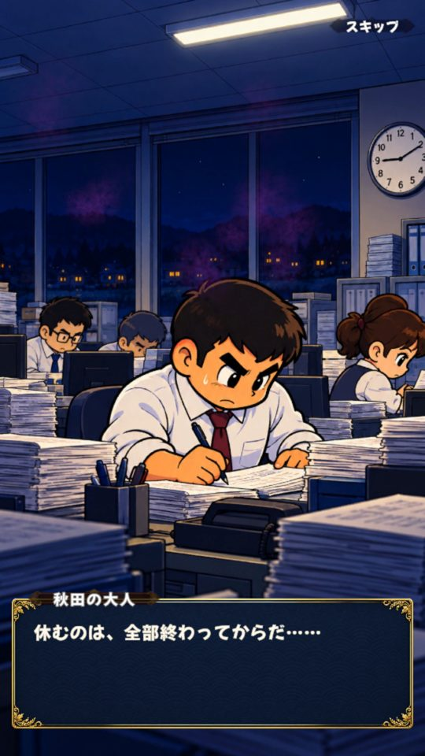
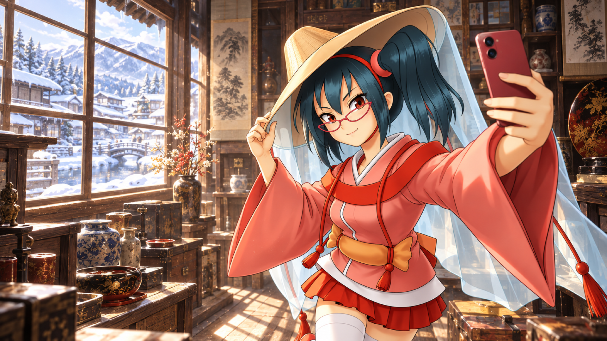
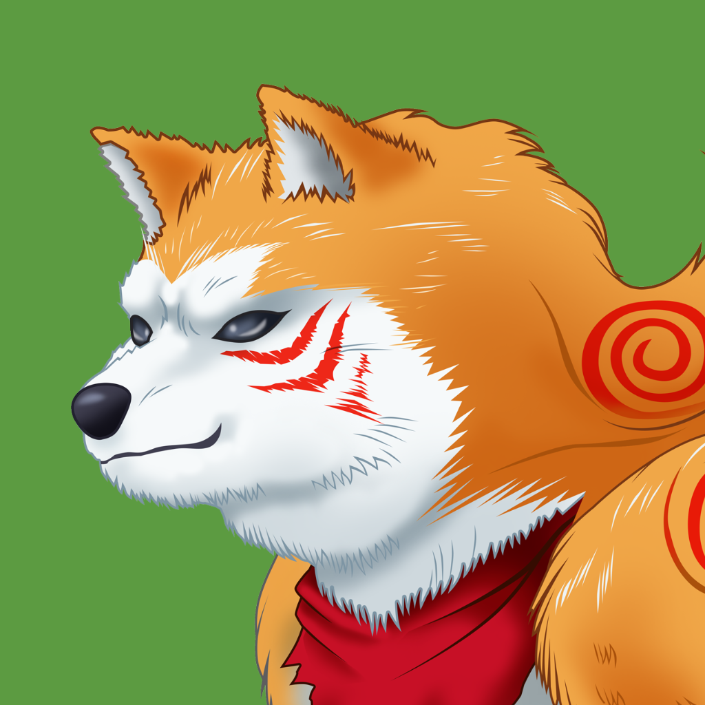

太鼓で祭に入る、秋田のRPG
- スマホ
- 無料
- DL不要
物語CHAPTER SELECT
ナギサ

- 公開
- 12月
- 未開放
仲間PARTY
遊び方HOW TO PLAY

PROLOGUE
祖父の依頼で、秋田へ。
魂の提灯を集める旅
男鹿11/11
湯沢12/11
秋田
三湖
大館

鹿角- 触れる健太が歩く
- 叩く太鼓で祭
- 読む動く漫画
祠の試練
0 連鎖
ドンカッ
SCREENS




ブラウザで遊ぶ
開発版・11/11 正式公開
ファンブックITEM
ファンブック1巻 を みつけた！
公式ファンブック 1 男鹿編
11.11
500円
Unlimited

漫画7コマ文化秋田の話

作り方AIの裏側収録内容
ナギサとナマハゲが語る秋田の文化と、AIゲーム開発の手引き
- ストーリー編: 真面目の国に、影が目覚める／来たっすな、秋田／ナギサの幼い日、ナマハゲへの憧れ／祠の試練／ナマハゲとの対話
- ゲーム作り編: AIとMCPで作る、秋田のゲーム／AIでキャラクターを作る（緒方さんの原案を、AIでどう動く姿にしたか）
- 第2巻は「湯沢編＋プログラミング編」。巻はゲームの章と一緒に進みます